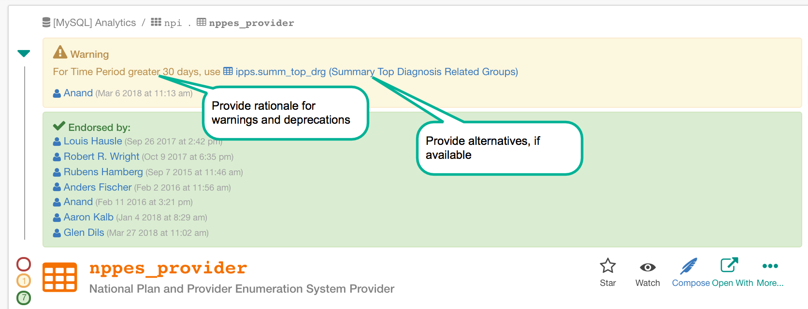

Use Trust Flags and Proceed with Confidence¶
Alation Cloud Service Applies to Alation Cloud Service instances of Alation
Customer Managed Applies to customer-managed instances of Alation
Trust Flags (also known as the red/yellow/green “stoplights”) are the primary way in which trust of data can be communicated to users. Trust Flags are available at the data source (including file systems and BI reports), schema, table and column levels, as well as for filters, joins, and queries.
Users can click the green stoplight to endorse a data object. They can warn other users about potential issues with data by clicking the yellow light and adding a required explanation. Similarly, users can deprecate a data object by clicking the red light and explaining why the data object is not to be trusted.
In addition to highlighting critical data issues on the catalog pages, trust flags are now carried forward to SQL writing in Compose using the Trust Check feature. SQL writers will see highlighted text if data they are using for their queries is endorsed, warned or deprecated. Analysts can quickly and easily trust that the data that they are using is appropriate and proceed with confidence.
Some of the ways we have seen customers use trust flags:
Endorse “gold standard” queries
Warn about data sets with non-continuous date ranges
Deprecate data sets that are being decommissioned
Best Practice #1: Determine who should be able to flag¶
For most organizations we recommend a bottom-up approach: enabling the majority of users to endorse, warn, or deprecate data objects. When users are properly trained, this maximizes the collective knowledge of the user community. For example, if a user identifies a problem with data that they know best they can take action and issue a warning or deprecation so that the community is immediately informed.
Some organizations may believe that only stewards have the combination of knowledge and authority required to assess whether a particular data object should be trusted. Some organizations may elect a top-down approach where only stewards are permitted to edit trust flags. Every element that can be flagged (except for filters, joins, and queries) can have permissions attached to restrict the ability to edit to the designated individuals or groups. The downside to this approach is that if permissions are restricted then the stoplights are not visible, and, as a result, users will not have as prominent a visual cue for trust flags. To supplement the knowledge of stewards, all users should be encouraged to be on the lookout for data quality issues and if they see something, they should say something by communicating with the appropriate steward through the Alation conversation feature.
Best Practice #2: Stewards with admin privileges should monitor the trust flags¶
Having knowledgeable stewards monitor trust flags combines the best of the top-down and bottom-up approaches of data curation. The knowledge of the community is captured, but the risk of uncontrolled trust flags is mitigated. If there is disagreement among users about whether data should be trusted or not, the stewards with admin capability should intervene to clarify the discussion and drive to a decision. If necessary, the steward can delete trust flags that are inaccurate or obsolete.
Best Practice #3: Provide a rationale when warning or deprecating a data object¶
When a data element is warned or deprecated the user will be prompted to complete a required text field. This is where the rationale for the warning or deprecation should be documented. For example, if there is a problem with the data pipeline, it should be indicated in the text field for the warning or deprecation. In addition to clearly stating the problem, best practice would be to include appropriate contacts, links to articles, and time frames for resolution or data source decommissioning (if applicable).
Warnings should be used where data is essentially accurate, but certain precautions should be taken or conditions accounted for. For example, if there’s a data set that has accurate data but only over a certain time frame, that should be noted in a warning. On the other hand, deprecations should indicate data that is fundamentally flawed and should not be used, at least for the time being.
Best Practice #4: Display alternative data sources¶
Often when one data source is deprecated, it is because there is another, better source that should be used. By using a link to the preferred data set in the deprecation, Alation can be used to point users to the data that is trustworthy.
Endorse - Warn - Deprecate
{kind=link}
Best Practice #5: Consider when to use endorsements¶
Warning and deprecating data are clearly to be used when there are exceptions and data need to be flagged as untrustworthy for one reason or another. Depending on the current state of your data, stewards may consider using endorsements in a similar matter. For instance, if a data source has many instances of untrustworthy data, it may be necessary to proactively endorse data that is good. In this case trustworthy data can be considered the exception that needs to be called out using the endorsement trust flag.
Another time to consider using endorsements is where there are two similar data sets that may be “in competition”. In this case endorsements can prevent potential misunderstandings about which data set to use. This is a situation that shouldn’t last for long as the “losing” data set should be deprecated and, ultimately, decommissioned.
Best Practice #6: Encourage users to flag filters, joins, and queries¶
All users can flag filters, joins, and queries. Users have the responsibility to be on the lookout for problems with data and how it is used in queries and should use the flags to document their concerns. As an example, if there is a poorly constructed query that is consuming inordinate DB resources, it should be flagged, with a link to a “gold standard” model query included in the warning explanation. Like the data catalog pages, stewards with admin privileges should monitor and control trust flags so they are not used inappropriately.